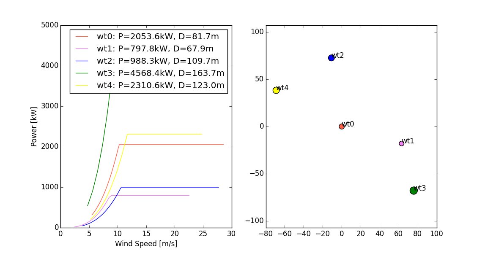

This tutorial covers how to use FUSED-Wind’s energy analysis framework for basic energy production analysis.
As an example of Basic_AEP, let us simulate energy production for a land-based wind plant.
The first step is to import the relevant files and set up the component.
# A simple test of the basic_aep model
from fusedwind.plant_flow.basic_aep import aep_weibull_assembly
import numpy as np
aep = aep_weibull_assembly()
The plant energy production model relies on some turbine as well as plant input parameters that must be specified. Firstly the wind turbine power curve must be set along with the site hub height Weibull scale and shape factors. There is no flow model so array losses and other turbine and plant losses must be directly set. Finally the number of turbines is included as the AEP per turbine is calculated by the number of turbines in the plant to get the total energy production.
# Set input parameters
aep.wind_curve = np.array([1.0, 2.0, 3.0, 4.0, 5.0, 6.0, 7.0, 8.0, 9.0, 10.0, \
11.0, 12.0, 13.0, 14.0, 15.0, 16.0, 17.0, 18.0, 19.0, 20.0, 21.0, 22.0, 23.0, 24.0, 25.0, 26.0])
aep.power_curve = np.array([0.0, 0.0, 0.0, 187.0, 350.0, 658.30, 1087.4, 1658.3, 2391.5, 3307.0, 4415.70, \
5000.0, 5000.0, 5000.0, 5000.0, 5000.0, 5000.0, 5000.0, 5000.0, 5000.0, 5000.0, 5000.0, 5000.0, \
5000.0, 5000.0, 0.0])
aep.A = 8.35
aep.k = 2.15
aep.array_losses = 0.059
aep.other_losses = 0.0
aep.availability = 0.94
aep.turbine_number = 100
We can now evaluate the plant energy production.
aep.run()
We then print out the resulting energy production values.
print "Annual energy production for an offshore wind plant with 100 NREL 5 MW reference turbines."
print "AEP gross output (before losses): {0:.1f} kWh".format(aep.gross_aep)
print "AEP net output (after losses): {0:.1f} kWh".format(aep.net_aep)
print
The result is:
>>> Annual energy production for an offshore wind plant with 100 NREL 5 MW reference
turbines.
>>> AEP gross output (before losses): 1570713782.2 kWh
>>> AEP net output (after losses): 1389359168.9 kWh
First we create a test GenericWindFarmModel to emulate a wind farm flow model. This model will just randomly create a power for the wind farm out of the wind farm layout given as input.
from fusedwind.plant_flow.comp import GenericWindFarm
from numpy.random import random
class MyTestWindFarm(GenericWindFarm):
""" A random generic wind farm, producing random power for testing purpose """
def execute(self):
self.wt_power = [random() * wt_desc.power_rating for wt_desc in self.wt_layout.wt_list]
self.wt_thrust = [pow_ / (random() * self.wind_speed) for pow_ in self.wt_power]
self.power = sum(self.wt_power)
self.thrust = sum(self.wt_thrust)
Then we define a function that creates an AEPMultipleWindRoses instance and pass it the new MyTestWindFarm that we just created. Here the wind turbine layout is randomly generated with the function generate_random_wt_layout()
from fusedwind.plant_flow.asym import AEPMultipleWindRoses
from fusedwind.plant_flow.generate_fake_vt import generate_random_wt_layout
import numpy as np
def my_aep_calculation(wind_farm_model):
aep = AEPMultipleWindRoses()
aep.add('wf', wind_farm_model())
aep.configure()
aep.connect('wt_layout', 'wf.wt_layout')
# The wind speed/directions bins to consider in the AEP calculation
aep.wind_speeds = np.linspace(4., 25., 10).tolist()
aep.wind_directions = np.linspace(0., 360., 36)[:-1].tolist()
# Number of wind turbines
nwt = 5
aep.wt_layout = generate_random_wt_layout(nwt=nwt)
aep.run()
return aep
Let’s look at what it returns. It’s an instance of the AEPMultipleWindRoses class, that has now some outputs: net_aep is the net AEP of the wind farm, and wt_aep is the AEP for each turbine.
aep = my_aep_calculation(MyTestWindFarm)
print 'Net AEP: ', aep.net_aep
print 'WT AEP:', aep.wt_aep
The result is (with our random numbers):
>>> Net AEP: 8080631217.75
>>> WT AEP: [ 4.18783691e+08 2.39854533e+08 1.81198275e+09 2.59028985e+09 3.01972040e+09 ]
Now lets plot some things. Here we will plot on the left sub-plot all the power curves of the wind turbines in the layout created, and on the right sub-plot, a scatter plot of the position of the turbine in the layout, and their respective rotor size as a scale.
import pylab as plt
f, (ax1, ax2) = plt.subplots(1, 2)
colors = ['tomato', 'violet', 'blue', 'green', 'yellow']
ax2.scatter(aep.wf.wt_layout.wt_positions[:,0],
aep.wf.wt_layout.wt_positions[:,1], c=colors,
s=aep.wf.wt_layout._wt_list('rotor_diameter'))
for wt, c in zip(aep.wf.wt_layout.wt_list, colors):
ax1.plot(wt.power_curve[:,0],wt.power_curve[:,1]/1000.0, color=c,
label='{name}: P={P:.1f}kW, D={D:.1f}m'.format(
name=wt.name, P=wt.power_rating/1000., D=wt.rotor_diameter))
ax2.text(wt.position[0], wt.position[1], wt.name)
ax1.legend()
ax1.set_xlabel('Wind Speed [m/s]')
ax1.set_ylabel('Power [kW]')
ax2.axis('equal')
plt.show()
Of course if you plot this yourself, it will probably be different, because the layout and turbines are randomly generated.
{kind=link}